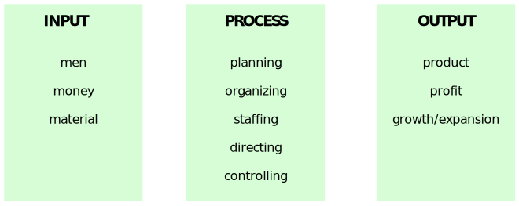

Principle of Management
- Good management is the art of making problems so interesting and their solutions so constructive that
everyone wants to get to work and deal with them. -- Paul Hawken (Author and Entrepreneur)
- Management refers to the task and activities involved in directing the organization or one of its units
planning, organizing, staffing and controlling.
- The process of reaching organizational goals by working with and through people and other organizational
recources.
- In other words management is defined as a process of getting things done by others.
- Managment is an important element in every organization. It is the element that coordinates current
organizational activities and plans for future.
Some Definitions of Management :-
- "Management is the art of "knowing what you want to do" and then seeing that it is done in the best
and cheapest way. - F.W. Taylor
- Management as a process consists of Planning, Staffing and Controlling activities performed to
determine and accomplish the objectives by use of people and resources. - George R. Terry
- We can also define management as the act of achieving the organizational goals or objectives.
Concept of Management
Management is a wider concept so the term is used in different ways, such as :-
- Management as a Discipline :- It refers to the field of study having well defined concepts and
principles, which helps in managing.
From this viewpoint we can also conclude that management involves various principles and
how these principles can be applied in managing an organization, so it has the orientation of both
science as well as art.
- Management as a Group of People :- It refers to those people who are managing the organizations.
For example :- XYZ Company's Management is good, then you are refering to Management as a
group of people of XYZ company.
- Management as a Process :- It refers to the process as method of handling activites in an
organization.
For example :- When we say, management of ABC company is highly decentralized,
here we are reffering to management as a process
When we say, Prime limited has the clear
mission statement, then we are referring to management as a process.
Integrated Approach of Management
Management is a force that integrates the resources of organization into effective operating unit by
making proper use of management functions.
( Planning, Organising, Staffing, Directing and Controlling.)

Nature or Features of management
-
Group Activity :- It is a group activity which involves 2 different categories in it → firstly
the managers and secondly the workers.
-
Goal Oriented Process :- It is a goal oriented process. Goal is the end result which the
organization
aims to achieve.
For ex- The end result or goal of an organization is to achieve profits and customers
satisfaction and for that they work to produce better quality products.
-
Continous Process :- Management is a never ending process. It continues with any of the management
functions and carries on and the sequence order can gets changed of the process.
-
Dynamic Process :- It is dynamic process.
Planning → Organizing → Staffing → Directing → Controlling →
Planning
Dynamic process refers to the process which keeps on changing as per requirements. Managers need
to change their way of operations based on environmental changes.
For examples :- Earlier shares used to be in hard form but due to advancement in technologies in
the current scenerio it has been replaced by electronic (dematerialized) shares.
-
Intangible Force :- It is an intangible force which cannot be seen or touched but it can be felt or
inferred by the working of an organization.
-
Integrating Force :- It works as in integrative force, one which keeps all elements together. In an
organization it integrates - financial, human and other resources together to achieve organizational
goals.
-
Universal Acceptance :- Management is Universal. This feature of management has 2 implications.
-
Management is applicable to all types of organization public, private or large or small,
etc.
-
Management is relevant throughout the world - India, USA, China, etc. But however management
practises may differ from nation to nation due to the changes in their culture.
Purpose of Management :-
The main purpose of management is to achieve the various organizational objectives.
- Organizational Objectives :- Since, organization is created with purpose, it has certain objectives.
The objectives are as :-
- Survival Objective :- It denotes the existence of an organization in long run as no
organization can gain profit and growth without survival.
- Profit Objective :- It denotes that the business organization should earn profit on
continous basis. Profit is the reward for the risk which organization takes in order to
achieve/conduct its operations.
- Growth Objectives :- Growth objective denotes that an organization must grow over a period
of time & for growth organization must earn profits.
- Individual Objectives :- It refers to those individuals who are associated with the organization.
Individual objectives includes :-
- Fair and equal remuneration, job security, training and development opportunities promotion.
- Recognition for good work done
- Good working conditions.
- Additional benefits like medical, etc.
- Social objectives :- Being part of society organization has to fullfill their certain objectives
keeping society at its importance.
Social objectives includes :-
- quality products at fair prices
- honest & timely payment of taxes
- protecting environment balance
- fair treatment with suppliers, competitors & dealers, etc.
- preserving social & ethical issues.
Importance of Management :-
- Achieving Organizational Goals :- Management is relevant to all form of organizations and every
organization strive for achieving certain goals.
Management helps in achieving these goals by
effective utilization of organizational resources both human & non human.
- Increases Efficiency :- Management helps in increasing productivity by using suitable managment
process which includes management functions.
- Inculcating(teaching) Creativity :- It helps in improving creativity in organizations people
creativity involves generating new ideas or combinations to innovate new things, products, new ways
of serving customers etc. Innovation is important to face competition effectively.
- Building Dynamic Organization :- It means that changes in an organization are done on continous
basis.
Dynamic organization is the one which interacts with its environment and changes itself
in order to meet environment needs.
- Itegrating various interest groups :- An organization is a combination of various interested members
or groups :- owners, employees, customers, suppliers, govt, investors, society, etc.
Each group
has certain goals and they tries to achieve through organizational functioning. Mangement helps
intergrating the goals of various interest groups in such a manner that every groups is able to
achieve their goal without putting pressure on other group members goals.
- Developing Society :- Management helps in developing society in many different way.